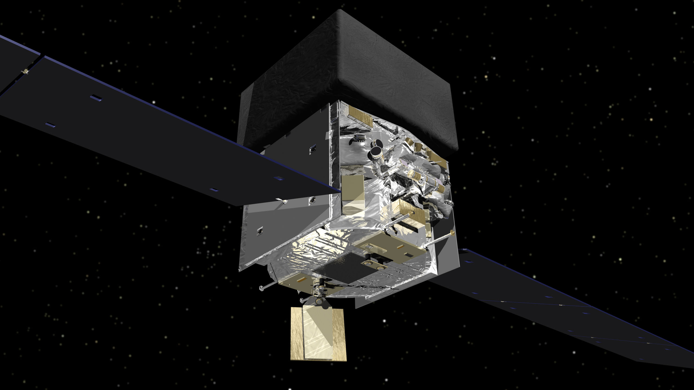

FERMI GAMMA-RAY PULSAR SEARCH
- What is a neutron star?

When a massive star has used up all its nuclear fuel for energy production, it explodes in a supernova. In this process, the outer layers of the former star are blasted away while the core collapses under its own weight. The core of the star gets compressed so much that the protons and electrons within it combine to become neutrons (and neutrinos). The resulting object is called a neutron star. If the neutron star weighs more than two or three solar masses, it collapses further and forms a black hole.
Neutron stars are exotic objects. They are made up of matter much more densely packed than normal, giving the entire star a density comparable to an atomic nucleus. The diameter of our Sun would shrink to less than 30 kilometers if it was that dense. Neutron stars also revolve around themselves up to hundreds of times in a single second.
- What is a pulsar?
Neutron stars have extremely strong magnetic fields. Charged particles accelerated along the field lines emit electromagnetic radiation in different wavelengths. This radiation is bundled into a cone along the magnetic field axis. As the neutron star turns about its rotational axis, the cones of radiation sweep through the sky like a lighthouse beam because the rotational axis is usually inclined relative to the magnetic field axis. The neutron star becomes visible as a pulsar, if the beams sweep over Earth. Pulsars rotate between once every few seconds up to once in only milliseconds. These rotational periods can be highly stable with a precision that places them among the most accurate clocks in the Universe.
The first pulsar was discovered in 1967 by Jocelyn Bell Burnell at radio wavelengths. Nowadays we know more than 2500 of these radio pulsars. But pulsars were also found at other wavelengths. We know many X-ray and gamma-ray pulsars, for a handful even optical pulsations have been seen. Scientists have observed many pulsars at multiple wavelengths, but some pulsars remain undetected in parts of the electromagnetic spectrum. In some cases scientists can already explain why a particular pulsar emits in one part of the spectrum but not in the other. However, not all mechanisms which govern radiation emission in different frequency ranges are fully understood yet.
- Why are some pulsars visible in radio waves and others in gamma rays?

A plausible explanation why some pulsars are visible as gamma-ray pulsars and not as radio pulsars could be that the lower-energy radio waves are bundled in a tighter cone at the magnetic poles than the high-energy gamma radiation. Since radiation is mainly emitted along the surface of the cone and different wavelengths are emitted in cones with a different spread, radio waves and gamma waves would leave the neutron star in different directions. A pulsar might thus become visible as a gamma-ray or radio pulsar to a distant observer (depending on which cone sweeps across the observers position).
Another model has gamma radiation originating not in the polar regions of the magnetic field but rather the equatorial plane where the field lines are disrupted. Then of course the pulsar could just not radiate in gamma rays or radio intrinsically. It is therefore very important to observe as many pulsars as possible in all wavelengths to better understand these mechanisms.
For some pulsars in binaries another explanation is possible. If the energetic pulsar emission hits the companion, material of the companion’s surface is blasted away. The material is then floating around in the surrounding of the binary system. Radio waves are easily blocked by this while gamma rays are usually unaffected.
- What kind of data is used by Einstein@Home?
- 
Observations of the gamma-ray sky with very high time resolution are conducted by the Large Area Telescope (LAT) onboard NASA’s Fermi Gamma-ray Space Telescope. The satellite circles the Earth every 95 minutes in a low orbit ca. 560 kilometers above ground with the LAT always facing almost perfectly “up” away from Earth.
The LAT can detect single gamma-ray photons, their energy (in the range from 20 MeV to 300 GeV), the direction they came from (to less than a degree) and when they arrived (to a few microseconds). At any given time, the LAT “sees” about a fifth of the entire sky. The orbital motion of the satellite and the Earth, as well as a rocking motion of the satellite make sure that the LAT covers the entire sky after two orbits. The entire data is public within hours for everyone. Sky maps and source catalogues are generated and regularly updated with LAT data obtained over longer times (years).
The Einstein@Home scientists selected the most “pulsar-like” objects based on their gamma-ray energy distribution as their targets from more than 1000 unidentified sources in the Fermi-LAT Source Catalog. For the 118 selected sources, they used novel, highly efficient methods to analyze the detected gamma-ray photons for hidden periodicities. This is the Fermi Gamma-ray pulsars (short: FGRP) search.
By now Einstein@Home researchers also selected three sources which look “pulsar-like” and where other observations indicate that they seem to be in binary systems. Combined with optical observations of these systems (see “How does Einstein@Home search for gamma-ray pulsars in binary systems?” below), Einstein@Home searches for gamma-ray pulsars in binary systems. Whenever new optical observations indicate a binary system for a pulsar-like gamma-ray source, it gets selected and the survey is extended. This is the Fermi Gamma-ray pulsars in Binaries (short: FGRPB) search.
- Why is it so hard to find gamma-ray pulsars?

Finding the periodic pulsations from gamma-ray pulsars is very difficult – even more so from the very fast millisecond pulsars. On average only 10 photons per day are detected from a typical pulsar by the LAT onboard the Fermi spacecraft. To detect periodicities, years of data must be analyzed, during which the pulsar might rotate tens of billions of times. For each photon one must determine exactly when during a single milliseconds rotation period it was emitted. This requires searching over long data sets with very fine resolution in order not to miss any signals. The computing power required for these “blind searches” – when little to no information about the pulsar is known beforehand – is enormous.
- What is new about the Einstein@Home search for gamma-ray pulsars?
The new methods used in the Einstein@Home survey improve the search sensitivity without increasing the associated computational costs. They consist of an initial search stage more sensitive than in earlier Einstein@Home gamma-ray searches. This initial search stage produces a number of promising candidates. They are then followed up on with an even more sensitive second stage, which zooms in and narrows down the uncertainty in the pulsar’s physical properties. The final step of the search is not performed on Einstein@Home, but on the Atlas computer cluster at the Max Planck Institute for Gravitational Physics (Albert Einstein Institute) in Hannover.
In the past years all gamma-ray blind-search discoveries have been made by Einstein@Home. In total Einstein@Home has detected 23 new gamma-ray pulsars by now, which is more than one third of all such objects discovered through blind searches.
- Why is it so difficult to find gamma-ray pulsars in binary systems?
To unambiguously identify a gamma-ray pulsar, its properties must be known to a very high degree of precision. Only then can astronomers determine the rotational phase at which each of the gamma-ray photons was emitted by the pulsar. And only then can the gamma-ray pulsations be detected without doubt. None of the relevant pulsar properties, such as its position in the sky, its rotational frequency and how this changes, nor the orbital parameters of the binary system, are known as priori.
Researchers must check many combinations of these properties in a blind search. The number of possible combinations is especially high as binary pulsars often rotate with very high frequencies. If the scientists were to immediately search through multiple years of Fermi data, the number of possible combinations would be so large that the computing effort required would make a practical implementation impossible.
- How does Einstein@Home search for gamma-ray pulsars in binary systems?
The new analysis method splits the full data set into shorter overlapping sections. Each of the sections can now be searched separately; the individual results are then combined in an optimal way. Overall, this search method is almost as sensitive as a search through all data acquired since 2009 in one run. If a promising signal is found at a particular parameter combination, the full set of data can be checked with this combination very quickly.
The key is to distribute the parameter combinations as cleverly as possible so that any signal is found with the highest possible probability and unnecessary computations are avoided. The new analysis method employs an algorithm which adaptively improves the parameter combinations – also called grid points – to cover the total parameter space while keeping computing costs as low as possible.
In addition, observations with optical telescopes are used to constrain the range of the unknown parameters as far as possible. For example, by looking at the variations in the brightness at different colors of the putative gamma-ray pulsar’s companion, one can learn about the properties of the pulsar orbit and get good estimates of where the pulsar is in its orbit at which point of time, how large the orbit is, and what its angle towards our line of sight is. These estimates help to speed up the Einstein@Home search dramatically.
- What happens when your computer discovers a pulsar?
If the analysis of a particular set of workunits looks promising and shows clear or faint signs of an unknown gamma-ray pulsar, further follow-up analyses of all existing Fermi data are conducted to confirm the existence of the pulsar. The follow-up methods are more computing intensive than the search methods but also more sensitive and thus able to decide if a promising candidate is a pulsar.
Upon detection of pulsations a mathematical model (called a “timing solution”) is constructed. It precisely predicts the arrival time of every single pulse over the many years of Fermi LAT observations. The timing model can be used to extract astrophysical information about the pulsar (and for a binary pulsar also about its companion).
The handful of users, on whose computers the initial data analysis was performed that found the candidate with the highest significance, will be credited in the acknowledgements section of the scientific discovery paper.